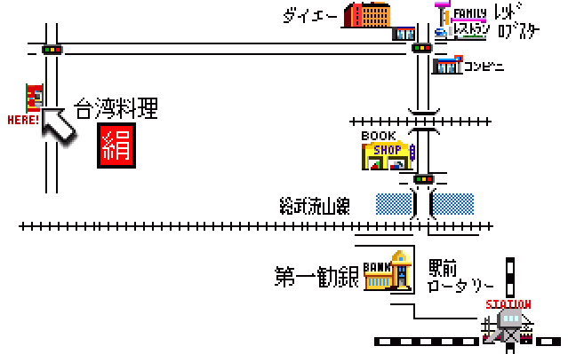

熱電変換素子の優秀発明賞祝賀会
幹事：山本
熱電変換素子の出願特許が優秀発明賞を受賞しました。そこで、熱電チームに復活した
根本氏
、ウォッチ事業部の
小棚木氏
、
金坂氏
、
濱尾氏
の歓迎会も兼ねて、下記の日程で祝賀会を催したいと思います。
記
日 時: ５月１５日（木） １８：３０〜
場 所: 新松戸駅から徒歩６分
台湾料理「絹」 TEL: 047-343-4877
詳しい道順の説明

幹事: 山本三七男(712-3573)